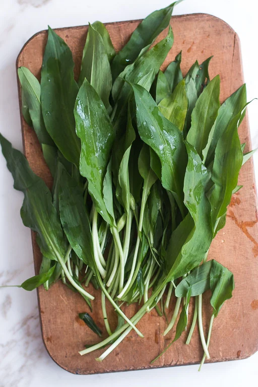
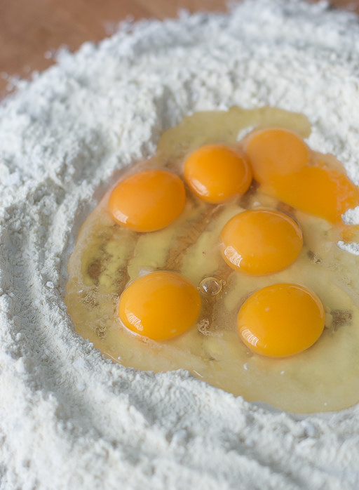
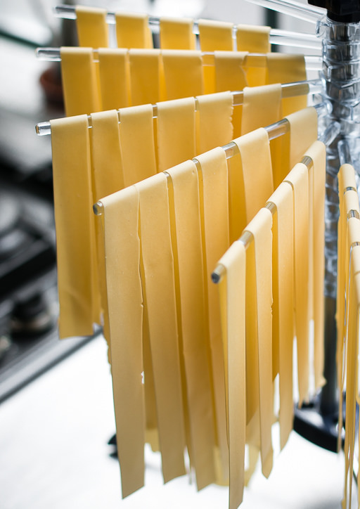
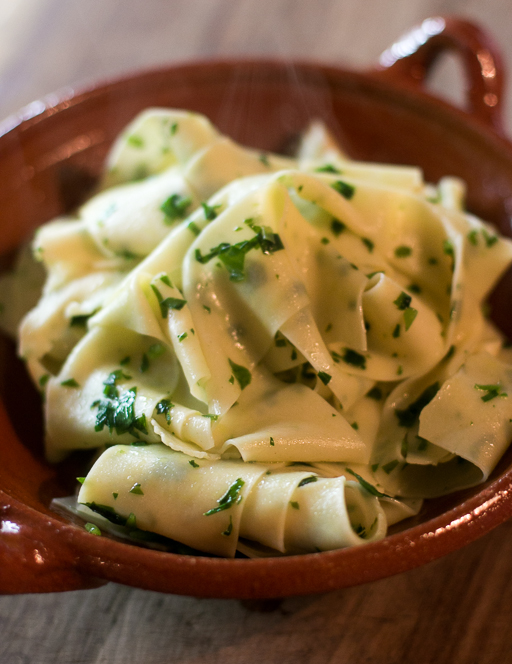

Wild Garlic Pasta

6 to 8 ounces (170g to 225g) wild garlic, or ramps
3 tablespoons olive oil, plus extra for finishing the pasta
1 1/4 pounds (565g) fresh pasta
sea salt
fresh ground black pepper


- Wash and dry the leaves of wild garlic (or ramps). Coarsely chop the leaves. You should have 1 1/2 to
2 cups, loosely packed. (If using ramps, trim off the thicker bulbs before chopping the leaves, and
sauté them in the pan first, since they’ll take a bit longer to cook through than the leaves, in step
#4.)
- Bring a big pot of salted water to a boil.
- Heat the oil in a large skillet. When hot, add the wild garlic, seasoning with salt and pepper.
- Meanwhile, drop the pasta in the boiling water. While the pasta is cooking, stir the garlic in the
pan until it’s wilted and soft.
- When the pasta is done, drain well then toss in the skillet with the garlic.
- Divide the pasta among 4 bowls and drizzle each with additional olive oil and a sprinkle of salt, if
desired.
